Abair Leat is the world’s first minority language mobile messaging app. Equipped with all of the functions you’ve come to expect in a mobile messaging app, plus an innovative new predictive text function and an exciting rewards system, Abair Leat makes minority language communication easier and more enjoyable than ever before!
Abair Leat is currently under development as an Irish language application, but we hope that it will inspire minority language applications all over the world. For that reason, we’re happy to share our design and development processes with you. Let us take you behind the scenes of Abair Leat.
We worked hard to make Abair Leat beautiful and functional for you. Watch our video below to learn more about the project and how it is affecting the language in Ireland!
The Abair Leat Team
Coláiste Lurgan – Project Management for the initial developmental phase
Elon University – School of Communication – Design / Promotion / Branding
ADAPT Centre, Dublin City University – Irish predictive text and language usage assessment components
SuperPixels – Mobile & Web Agency – Building main platform framework
Interested in getting involved with Abair Leat, or learning more about how you can integrate Abair Leat’s functionality into your own minority language application?
Contact Abair Leat’s director:
Mícheál Ó Foighil
clurgan@yahoo.ie